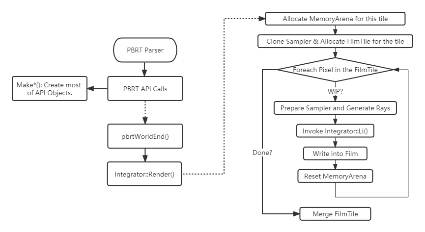

An Engineer's Look on the Architecture of pbrt-v4 for GPU Ray Tracing
Zihong Zhou 10 May 2022
Talk/Blog(s) on pbrt-v4 by Matt Pharr:
Ours:
pbrt review.
Porting pbrt to the GPU while Preserving its Soul, How exactly?
Nitty-gritty in C++17 and CUDA.
Inspirations.
Rendering Algorithms (except for an overview of path tracing).
*We talk about the tip of the iceberg. Image Courtesy of pixabay at https://pixabay.com/photos/iceberg-climate-ice-glacier-6966784/.
Reference textbook for state-of-the-art rendering algorithms.
Clearly structured and goes from theory to implementation.
We are their target audience:
LuxCoreRender is a production renderer based on pbrt*.
Image courtesy of Langlands and Fascione 2020
Image courtesty of Matt Pharr's blog Swallowing the elephant.

*Almost the same for pbrt-v3 and pbrt-v4.
Aggregate
Camera
Filter
Integrator
Light
Material
Media
Sampler
Shape
Texture
Before diving into pbrt-v4's GPU implementation, consider:
Recall:
__device__
__global__/__kernel__
__host__
__global__
pbrt Annotations:
　                                                  PBRT_CPU_GPU
__host__ __device__
PBRT_GPU
?
class BSDF { public: // CPU Only. BSDF() = default; // CPU && GPU. PBRT_CPU_GPU BSDF(Normal3f ns, Vector3f dpdus, BxDF bxdf) : bxdf(bxdf), shadingFrame(Frame::FromXZ(Normalize(dpdus), Vector3f(ns))) {} PBRT_CPU_GPU operator bool() const { return (bool)bxdf; } PBRT_CPU_GPU BxDFFlags Flags() const { return bxdf.Flags(); } PBRT_CPU_GPU Vector3f RenderToLocal(Vector3f v) const { return shadingFrame.ToLocal(v); } PBRT_CPU_GPU Vector3f LocalToRender(Vector3f v) const { return shadingFrame.FromLocal(v); } }
Mixing CPU && GPU code in one place.
STL: std::vector/array/optional on GPU?
expt-relaxed-constexpr
*<cmath> functions within STL are a bit different. *std::initializer_list is a bit different. Refer to I.4.20.2.
std::initializer_list
template <typename T, int N> PBRT_CPU_GPU class array { iterator begin() { return values; } public: PBRT_CPU_GPU using value_type = T; iterator end() { return values + N; } using iterator = value_type *; PBRT_CPU_GPU using const_iterator = const value_type *; const_iterator begin() const { return values; } using size_t = std::size_t; PBRT_CPU_GPU 　 const_iterator end() const { return values + N; } array() = default; 　 　 PBRT_CPU_GPU /*--no-host-device-initializer-list.*/ size_t size() const { return N; } PBRT_CPU_GPU 　 array(std::initializer_list<T> v) { PBRT_CPU_GPU size_t i = 0; T &operator[](size_t i) { return values[i]; } for (const T &val : v) 　 values[i++] = val; PBRT_CPU_GPU } T *data() { return values; } 　 ... PBRT_CPU_GPU 　 void fill(const T &v) { private: for (int i = 0; i < N; ++i) T values[N] = {}; values[i] = v; } }
*These containers are redesigned to be compatible with polymorphic_allocator.
polymorphic_allocator
template<typename ArrayType, size_t ArraySize> __global__ void libcuTest(cuda::std::array<ArrayType, ArraySize> x, cuda::std::array<ArrayType, ArraySize> y) { for (int i = 0; i < ArraySize; i++) { printf("--: %d\n", std::plus<ArrayType>()(x[i], y[i])); } } int main(){ cuda::std::array<int, 5> arrayX; arrayX.fill(10); cuda::std::array<int, 5> arrayY; arrayY.fill(20); libcuTest<decltype(arrayX)::value_type, arrayX.size()> <<<1, 1>>> (arrayX, arrayY); return 0; }
Lessons learned:
optional
Recall memory allocation at host side:
new/malloc
ThreadPool
MemoryArena
alloca()
Recall memory allocation at device side:
cudaMalloc{Pitch|3D}
cudaMemcpy{2D|3D}
cudaHostAlloc(cudaHostAllocDefault)
cudaHostAlloc(cudaHostAllocMapped)
cudaMallocManaged()
ALLOCA()
We need to abstract different types of memory allocations.
std::allocator<T>
allocator_traits
std::scoped_allocator_adaptor
std::pmr::polymorphic_allocator
pbrt-v4 reinvented the wheels though in pstd namespace:
pstd
namespace pstd{ class memory_resource { public: virtual ~memory_resource(); void *allocate(size_t bytes, size_t alignment = max_align) { return do_allocate(bytes, alignment); } void deallocate(void *p, size_t bytes, size_t alignment = max_align) { return do_deallocate(p, bytes, alignment); } bool is_equal(const memory_resource &other) const noexcept { return do_is_equal(other); } private: virtual void *do_allocate(size_t bytes, size_t alignment) = 0; virtual void do_deallocate(void *p, size_t bytes, size_t alignment) = 0; virtual bool do_is_equal(const memory_resource &other) const noexcept = 0; }; } // namespace pstd
pbrt-v4 uses unified memory* for CUDA memory resource.
class CUDAMemoryResource : public pstd::pmr::memory_resource { void *do_allocate(size_t size, size_t alignment){ void *ptr; CUDA_CHECK(cudaMallocManaged(&ptr, size)); CHECK_EQ(0, intptr_t(ptr) % alignment); return ptr; } void do_deallocate(void *p, size_t bytes, size_t alignment){ CUDA_CHECK(cudaFree(p)); } bool do_is_equal(const memory_resource &other) const noexcept { return this == &other; } };
*Unified Memory: one single pointer for host and device access. No more cudaMemcpy() calls, CUDA runtime does this automatically for developers.
cudaMemcpy()
using Allocator = polymorphic_allocator<std::byte>; template <class Tp = std::byte> class polymorphic_allocator { public: using value_type = Tp; polymorphic_allocator() noexcept { memoryResource = new_delete_resource(); } polymorphic_allocator(memory_resource *r) : memoryResource(r) {} memory_resource *resource() const { return memoryResource; } // member functions [[nodiscard]] Tp *allocate(size_t n) { return static_cast<Tp *>(resource()->allocate(n * sizeof(Tp), alignof(Tp))); } void deallocate(Tp *p, size_t n) { resource()->deallocate(p, n); } void *allocate_bytes(size_t nbytes, size_t alignment = alignof(max_align_t)); void deallocate_bytes(void *p, size_t nbytes, size_t alignment = alignof(std::max_align_t));
template <class T> T *allocate_object(size_t n = 1); template <class T> void deallocate_object(T *p, size_t n = 1); template <class T, class... Args> T *new_object(Args &&...args) { // NOTE: this doesn't handle constructors that throw exceptions... T *p = allocate_object<T>(); construct(p, std::forward<Args>(args)...); return p; } template <class T> void delete_object(T *p); template <class T, class... Args> void construct(T *p, Args &&...args) { ::new ((void *)p) T(std::forward<Args>(args)...); } template <class T> void destroy(T *p) { p->~T(); } private: memory_resource *memoryResource; };
memory_resource
(un)synchronized_pool_resource
Reference: Memory Resources in a Heterogeneous World at CppCon 2019.
PointLight *PointLight::Create(const Transform &renderFromLight, Medium medium, const ParameterDictionary ¶meters, const RGBColorSpace *colorSpace, const FileLoc *loc, Allocator alloc) { Spectrum I = parameters.GetOneSpectrum("I", &colorSpace->illuminant, SpectrumType::Illuminant, alloc); Float sc = parameters.GetOneFloat("scale", 1); Float phi_v = parameters.GetOneFloat("power", -1); ... return alloc.new_object<PointLight>(finalRenderFromLight, medium, I, sc); }
PointLight::Create() is neither PBRT_CPU_GPU nor PBRT_GPU! It could only be invoked on the CPU side; recall:
PointLight::Create()
PointLight
This is what PointLight like in pbrt-v3:
class PointLight : public Light { public: PointLight(const Transform &LightToWorld, const MediumInterface &mediumInterface, const Spectrum &I); Spectrum Sample_Li(const Interaction &ref, const Point2f &u, Vector3f *wi, Float *pdf, VisibilityTester *vis) const; Spectrum Power() const; Float Pdf_Li(const Interaction &, const Vector3f &) const; Spectrum Sample_Le(const Point2f &u1, const Point2f &u2, Float time, Ray *ray, Normal3f *nLight, Float *pdfPos, Float *pdfDir) const; void Pdf_Le(const Ray &, const Normal3f &, Float *pdfPos, Float *pdfDir) const; private: const Point3f pLight; const Spectrum I; };
This is what Light like in pbrt-v3:
class Light { public: virtual ~Light(); Light(int flags, const Transform &LightToWorld, const MediumInterface &mediumInterface, int nSamples = 1); virtual Spectrum Sample_Li(const Interaction &ref, const Point2f &u, Vector3f *wi, Float *pdf, VisibilityTester *vis) const = 0; virtual Spectrum Power() const = 0; virtual void Preprocess(const Scene &scene) {} virtual Spectrum Le(const RayDifferential &r) const; virtual Float Pdf_Li(const Interaction &ref, const Vector3f &wi) const = 0; virtual Spectrum Sample_Le(const Point2f &u1, const Point2f &u2, Float time, Ray *ray, Normal3f *nLight, Float *pdfPos, Float *pdfDir) const = 0; virtual void Pdf_Le(const Ray &ray, const Normal3f &nLight, Float *pdfPos, Float *pdfDir) const = 0; const int flags; const int nSamples; const MediumInterface mediumInterface; protected: const Transform LightToWorld, WorldToLight; };
CUDA C Programming Guide I.4.10.3: It is not allowed to pass as an argument to a global function an object of a class with virtual functions. If an object is created in host code, invoking a virtual function for that object in device code has undefined behavior. If an object is created in device code, invoking a virtual function for that object in host code has undefined behavior.
This is incompatible with our paradigm: allocating object with virtual functions in the host and passed it to the device side.
CUDA C Programming Guide I.4.10.3: It is not allowed to pass as an argument to a global function an object of a class with virtual functions. If an object is created in host code, invoking a virtual function for that object in device code has undefined behavior. If an object is created in device code, invoking a virtual function for that object in host code has undefined behavior.*
*Caveat: Why? It is perfectly fine if an object is created in device code and you could invoke virtual dispatch in kernel.
Virtual dispatch on GPU is not recommended anyway and we need some solutions.
Possible solutions:
Stems from vtable hacks for rendering Disney's Moana island scene.
Each triangle in the scene carries an overhead of at least two vtable pointers: one for its Triangle and one for its SimplePrimitive. That’s 16 bytes. The Moana island scene has a total of 146,162,124 unique triangles, which adds up to almost 2.2 GB of highly-redundant vtable pointers. -- Swallowing the elephant (part 5) by Matt Pharr.
x86 CPUs today only use 48 bits of 64-bit addressing space for pointers. See also: CUDA C Programming Guide 3.2.2. Device Memory.
Builds on Meta/Folly's DiscriminatedPtr, at taggedptr.h
template <typename... Ts> class TaggedPointer { public: PBRT_CPU_GPU unsigned int Tag() const { return ((bits & tagMask) >> tagShift); } PBRT_CPU_GPU void *ptr() { return reinterpret_cast<void *>(bits & ptrMask); } ... private: static constexpr int tagShift = 57; static constexpr int tagBits = 64 - tagShift; static constexpr uint64_t tagMask = ((1ull << tagBits) - 1) << tagShift; static constexpr uint64_t ptrMask = ~tagMask; uintptr_t bits = 0;
public: template <typename F> PBRT_CPU_GPU decltype(auto) Dispatch(F &&func) { DCHECK(ptr()); using R = typename detail::ReturnType<F, Ts...>::type; return detail::Dispatch<F, R, Ts...>(func, ptr(), Tag() - 1); } template <typename F> decltype(auto) DispatchCPU(F &&func) { DCHECK(ptr()); using R = typename detail::ReturnType<F, Ts...>::type; return detail::DispatchCPU<F, R, Ts...>(func, ptr(), Tag() - 1); } }
*Note that there is a bug related to variadic template in their detail::Dispatch<>() implementation (See the next slide).
detail::Dispatch<>()
template <typename F, typename R, typename T0, typename T1, typename T2, typename T3, typename T4, typename T5, typename T6, typename T7, typename... Ts> auto DispatchCPU(F &&func, const void *ptr, int index) { switch (index) { case 0: return func((const T0 *)ptr); case 1: return func((const T1 *)ptr); ... default: return DispatchCPU<F, R, Ts...>(func, ptr, index - 8); } }
SFINAE
This is what Light base class like in pbrt-v4:
class Light : public TaggedPointer<PointLight, DistantLight, DiffuseAreaLight> { public: using TaggedPointer::TaggedPointer; static Light Create(const std::string &name, const ParameterDictionary ¶meters, const Transform &renderFromLight, const CameraTransform &cameraTransform, Medium outsideMedium, const FileLoc *loc, Allocator alloc); PBRT_CPU_GPU inline LightType Type() const; std::string ToString() const; PBRT_CPU_GPU void PDF_Le(const Ray &ray, Float *pdfPos, Float *pdfDir) const; ... };
PointLight inherits from LightBase:
LightBase
class PointLight : public LightBase { public: PointLight(Transform renderFromLight, MediumInterface mediumInterface, Spectrum I, Float scale); static PointLight *Create(const Transform &renderFromLight, Medium medium, const ParameterDictionary ¶meters, const RGBColorSpace *colorSpace, const FileLoc *loc, Allocator alloc); std::string ToString() const; PBRT_CPU_GPU void PDF_Le(const Ray &, Float *pdfPos, Float *pdfDir) const; ... private: const DenselySampledSpectrum *I; Float scale; };
void Light::PDF_Le(const Ray &ray, Float *pdfPos, Float *pdfDir) const { auto pdf = [&](auto ptr) { return ptr->PDF_Le(ray, pdfPos, pdfDir); }; return Dispatch(pdf); } SampledSpectrum Light::Phi(SampledWavelengths lambda) const { auto phi = [&](auto ptr) { return ptr->Phi(lambda); }; return DispatchCPU(phi); } void Light::Preprocess(const Bounds3f &sceneBounds) { auto preprocess = [&](auto ptr) { return ptr->Preprocess(sceneBounds); }; return DispatchCPU(preprocess); }
class LightBase { public: LightBase(LightType type, const Transform &renderFromLight, const MediumInterface &mediumInterface); PBRT_CPU_GPU LightType Type() const { return type; } PBRT_CPU_GPU SampledSpectrum L(Point3f p, Normal3f n, Point2f uv, Vector3f w, const SampledWavelengths &lambda) const { return SampledSpectrum(0.f); } PBRT_CPU_GPU SampledSpectrum Le(const Ray &, const SampledWavelengths &) const { return SampledSpectrum(0.f); } protected: LightType type; ... };
Caveat/Problems:
override
LightHandle
L()
Le()
std::string
PointLight* pPointLight = alloc.new_object<PointLight>(...);
Light pLightHandle{pPointLight};
PBRT_CPU_GPU void LightSampling(...){ ... pstd::optional<LightLiSample> ls = pLightHandle.SampleLi(...); // Invoke tagged dispatch (runtime polymorphism). if (!ls || !ls->L || ls->pdf == 0) return; ... }
We have not seen __global__ functions so far but __device__ ...
Why?
WavefrontPathIntegrator
HPG 2020: Porting pbrt to the GPU while Preserving its Soul
template <typename F> void ParallelFor(const char *description, int nItems, F &&func) { if (Options->useGPU) GPUParallelFor(description, nItems, func); ... } template <typename F> __global__ void Kernel(F func, int nItems) { int tid = blockIdx.x * blockDim.x + threadIdx.x; func(tid); // func has a thread id. } template <typename F> void GPUParallelFor(const char *description, int nItems, F func) { auto kernel = &Kernel<F>; // Getting address of a global kernel in host. int blockSize = GetBlockSize(description, kernel); int gridSize = (nItems + blockSize - 1) / blockSize; kernel<<<gridSize, blockSize>>>(func, nItems); }
template <typename ConcreteSampler> void WavefrontPathIntegrator::GenerateCameraRays(int y0, int sampleIndex) { RayQueue *rayQueue = CurrentRayQueue(0); ParallelFor( "Generate camera rays", maxQueueSize, PBRT_CPU_GPU_LAMBDA(int pixelIndex) { // sampler is captured by value. ConcreteSampler pixelSampler = *sampler.Cast<ConcreteSampler>(); CameraSample cameraSample = GetCameraSample(pixelSampler, pPixel, filter); pstd::optional<CameraRay> cameraRay = camera.GenerateRay(cameraSample, lambda); pixelSampleState.L[pixelIndex] = SampledSpectrum(0.f); rayQueue->PushCameraRay(cameraRay->ray, lambda, pixelIndex); ... }); }
GenerateCameraRays() will be executed in parallel on GPU!
GenerateCameraRays()
Definition of PBRT_CPU_GPU_LAMBDA:
PBRT_CPU_GPU_LAMBDA
#define PBRT_CPU_GPU __host__ __device__ #ifdef PBRT_IS_WINDOWS #define PBRT_CPU_GPU_LAMBDA(...) [ =, *this ] PBRT_CPU_GPU(__VA_ARGS__) mutable #else #define PBRT_CPU_GPU_LAMBDA(...) [=] PBRT_CPU_GPU(__VA_ARGS__) #endif
Background information:
*this
[thisVal=*this]
*You cannot access host memory in device code in general.
template <typename F, typename WorkItem> void ForAllQueued(const char *desc, const WorkQueue<WorkItem> *q, int maxQueued, F &&func) { // Launch GPU threads to process _q_ using _func_ GPUParallelFor(desc, maxQueued, [=] PBRT_GPU(int index) mutable { func((*q)[index]); }); } template <typename F> __global__ void Kernel(F func, int nItems) { int tid = blockIdx.x * blockDim.x + threadIdx.x; func(tid); // func has a thread id. } template <typename F> void GPUParallelFor(const char *description, int nItems, F func) { auto kernel = &Kernel<F>; // Getting address of a global kernel in host. int blockSize = GetBlockSize(description, kernel); int gridSize = (nItems + blockSize - 1) / blockSize; kernel<<<gridSize, blockSize>>>(func, nItems); }
void WavefrontPathIntegrator::HandleEscapedRays() { ForAllQueued( "Handle escaped rays", escapedRayQueue, maxQueueSize, PBRT_CPU_GPU_LAMBDA(const EscapedRayWorkItem w) { SampledSpectrum L(0.f); for (const auto &light : *infiniteLights) { ...Compute L... } L += pixelSampleState.L[w.pixelIndex]; // SOA pixelSampleState.L[w.pixelIndex] = L; }); }
CppCon at STL allocators:
pstd::span
pstd::optional
pstd::tuple
WorkQueue
MultiQueue